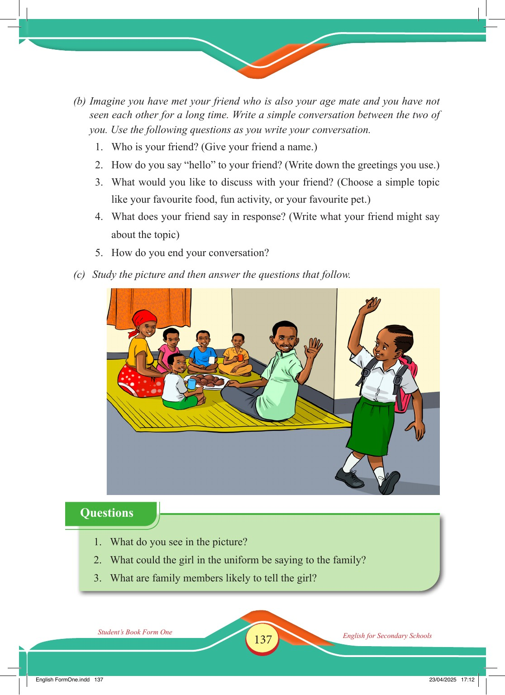

Accessible text transcript - page 137
Use the reader's read-aloud controls or select an individual segment below.
Printed book page 137. (b) Imagine you have met your friend who is also your age mate and you have not seen each other for a long time. Write a simple conversation between the two of you. Use the following questions as you write your conversation. 1. Who is your friend? (Give your friend a name.) 2. How do you say “hello” to your friend? (Write down the greetings you use.) 3. What would you like to discuss with your friend? (Choose a simple topic like your favourite food, fun activity, or your favourite pet.) 4. What does your friend say in response? (Write what your friend might say about the topic) 5. How do you end your conversation? Student’s Book Form One English for Secondary Schools English FormOne.indd 137 23/04/2025 17:12 (c) Study the picture and then answer the questions that follow. A schoolgirl in uniform with a backpack waves to a family sitting on a mat indoors, where they are sharing food and drinks. Questions box asking what is in the picture, what the girl in uniform could be saying to the family, and what the family members are likely to tell her. Questions 1. What do you see in the picture? 2. What could the girl in the uniform be saying to the family? 3. What are family members likely to tell the girl? Return to the page image